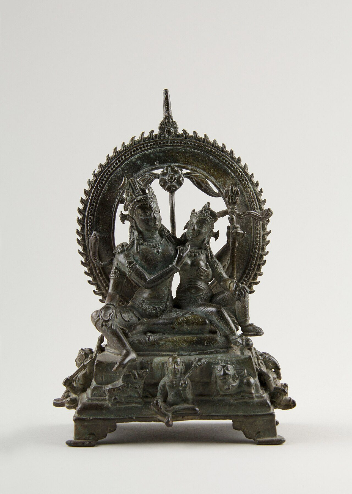

Chapter 6: Kashmir Śaivism: Trika, Krama, Spanda and Pratyabhijñā¶
Śivasūtra 1.1
caitanyam ātmā ||
The Self is consciousness.
6.1 Introduction¶
“Kashmir Śaivism” is a modern label for the non-dual Śaiva traditions that flourished in the Kashmir Valley between about the ninth and the twelfth centuries: the Trika (“Triad”), the Kālī-centred Krama (“Sequence”), and the philosophical schools of Spanda (“Vibration”) and Pratyabhijñā (“Recognition”). It is important to remember that Kashmir was also a major centre of the dualist Śaiva Siddhānta, whose exegetes debated with the non-dualists (Chapter 2) (Sanderson 1988; Dyczkowski 1987). The non-dual tradition culminated in the work of Abhinavagupta (c. 950–1016 CE) and his pupil Kṣemarāja.
These traditions hold that the whole universe is the manifestation of a single absolute consciousness, Śiva, endowed with the power of free self-expression. Unlike the Advaita Vedānta of Śaṅkara, which treats the world as an appearance due to ignorance, they regard the world as a real expression of divine consciousness.
6.2 Historical Development¶
6.2.1 Scriptural and Foundational Texts¶
The non-dual exegetes based themselves on the Śaiva Bhairava scriptures, especially the Mālinīvijayottara, the Svacchanda, the Netra and the Vijñānabhairava, and on a small number of foundational works of the ninth century. The seventy-seven aphorisms of the Śivasūtra, according to tradition, were found by Vasugupta inscribed on a rock on Mount Mahādeva after Śiva revealed their location in a dream. The verses of the Spandakārikā on “vibration” are attributed to Vasugupta or to his pupil Kallaṭa. The Vijñānabhairava, a short Bhairava scripture presenting some 112 contemplative techniques (dhāraṇās), was probably composed between the seventh and ninth centuries; its colophon assigns it to the Rudrayāmala.
6.2.2 The Principal Authors¶
Table 6.1 lists the principal authors of the tradition.
| Author | Approximate date | Key works |
|---|---|---|
| Vasugupta | c. 850–900 | Received the Śivasūtra; Spandakārikā attributed to him or Kallaṭa |
| Somānanda | c. 900–950 | Śivadṛṣṭi, the first Pratyabhijñā treatise |
| Utpaladeva | c. 925–975 | Īśvarapratyabhijñākārikā with his own commentaries; devotional Śivastotrāvalī |
| Abhinavagupta | c. 950–1016 | Tantrāloka; Tantrasāra; Parātriśikāvivaraṇa; commentaries on Utpaladeva; Abhinavabhāratī; Locana |
| Kṣemarāja | early 11th c. | Pratyabhijñāhṛdaya; Śivasūtravimarśinī; Spandanirṇaya, Spandasandoha; commentaries on the Svacchanda and Netra |
| Jayaratha | early 13th c. | Viveka commentary on the Tantrāloka |
6.3 Abhinavagupta¶
Abhinavagupta (c. 950–1016 CE) is the most important figure of the tradition and one of the major thinkers of Indian intellectual history. The conventional dates are an estimate: the years of his birth and death are not recorded, and his dated works run from a hymn of 990/91 to his long commentary on Utpaladeva’s own commentary on the Īśvarapratyabhijñākārikā, completed in 1014/15, so that his period of activity can be fixed more securely than his lifespan. At the end of the Tantrāloka he gives an account of his family and of his many teachers in grammar, logic, poetics, dramaturgy and the various Śaiva systems.
6.3.1 Major Works¶
-
Tantrāloka (“Light on the Tantras”): an encyclopaedic exposition in thirty-seven chapters (āhnikas) of the doctrine and ritual of the Trika, based on the Mālinīvijayottara and integrating Kaula and Krama teaching (see below).
-
Tantrasāra (“Essence of the Tantras”): a prose summary of the Tantrāloka.
-
Parātriśikāvivaraṇa: a commentary on a short Trika scripture, with a profound theology of the phonemes and the mantra sauh.
-
Īśvarapratyabhijñāvimarśinī and -vivṛtivimarśinī: commentaries on Utpaladeva’s verses and on Utpaladeva’s own (now largely lost) detailed commentary.
-
Abhinavabhāratī and Dhvanyālokalocana: commentaries on Bharata’s Nāṭyaśāstra and Ānandavardhana’s Dhvanyāloka, fundamental to Indian aesthetics.
6.4 The Thirty-Six Tattvas¶
The Kashmiri non-dualists share the Śaiva scheme of thirty-six tattvas (Table 2.2) but interpret it as the stages by which a single consciousness manifests itself. In their presentation the principles fall into three “paths”: the pure (śuddhādhvan, 1–5), in which consciousness knows the universe as itself, the will, knowledge and action of Śiva unfolding as Sadāśiva, Īśvara and pure knowledge; the realm of māyā and its five “coverings” (kañcukas, 6–11), which contract consciousness’s infinite powers of agency, knowledge, contentment, eternity and pervasion; and the impure realm (12–36), headed by the limited subject (puruṣa) and comprising the world it experiences. The Siddhānta, as the note to the table explains, counts Puruṣa instead with Māyā and the coverings, so that the two schools draw the boundary between the middle and the lower level in different places. Māyā itself, for the non-dualists, is not illusion, as it is for Advaita Vedānta, but a real power of Śiva by which he freely limits himself: it lets Śiva appear as limited subjects and objects, the world it produces is real as his self-expression, and it is overcome not by knowledge of a changeless Brahman but by the recognition of one’s identity with Śiva.
6.5 The Pratyabhijñā (Recognition) Philosophy¶
The Pratyabhijñā school, founded by Somānanda and given its classic philosophical form by Utpaladeva, argues — in dialogue especially with the Buddhist epistemologists Dharmakīrti and his followers — that the self is a single, continuous, self-aware consciousness, the Lord (īśvara). Liberation is not the acquisition of something new but the recognition (pratyabhijñā) that one already is that Lord (Dyczkowski 1987). The modern study of the school rests above all on Raffaele Torella’s critical edition and annotated translation of Utpaladeva’s verses with the author’s own short commentary (Torella 2002), on John Nemec’s edition and study of the first chapters of Somānanda’s Śivadṛṣṭi, the founding text of the school (Nemec 2011), and on Isabelle Ratié’s analysis of the Pratyabhijñā theory of the self and its debate with the Buddhist epistemologists (Ratié 2011).
Kṣemarāja’s Pratyabhijñāhṛdaya (“Heart of Recognition”), twenty short sūtras with his own commentary, is a concise introduction to the doctrine, drawing on Pratyabhijñā, Spanda and Krama sources (Singh 1963). Its first four sūtras are:
| Sūtra | Text | Meaning |
|---|---|---|
| 1 | citiḥ svatantrā viśvasiddhihetuḥ | Free consciousness is the cause of the manifestation of the universe |
| 2 | svecchayā svabhittau viśvam unmīlayati | By her own will she unfolds the universe on her own screen |
| 3 | tan nānā anurūpagrāhyagrāhakabhedāt | That universe is manifold because of the differentiation of mutually corresponding objects and subjects |
| 4 | citisaṃkocātmā cetano ’pi saṃkucitaviśvamayaḥ | The individual knower, whose nature is contracted consciousness, also contains the universe in contracted form |
6.5.1 Utpaladeva’s Argument¶
Utpaladeva’s Īśvarapratyabhijñākārikā is a work of philosophical argument, not of revelation. Its opponent is above all the Buddhist epistemological school of Dharmakīrti, which held that reality consists of momentary, particular events and that the unified, enduring self is a conceptual construction. Utpaladeva replies that memory, the synthesis of cognitions in judgement, and the very possibility of relating one experience to another presuppose a single, continuous subject. That subject, moreover, must be self-aware: an unconscious light could not manifest anything. He therefore argues that the fundamental reality is a self-luminous consciousness that is also reflexively aware of itself (vimarśa), and that this consciousness, by virtue of its freedom, manifests the world of subjects and objects as its own content. The “Lord” (īśvara) of the title is this consciousness, and the work’s aim is that the reader should recognise himself as that Lord.
The work’s first verse states its purpose in devotional terms: the author, having attained the servitude of the Lord, wishes to make recognition possible for all people. The combination of rigorous argument with devotion — Utpaladeva was also the author of the hymns collected as the Śivastotrāvalī — is characteristic of the tradition.
6.5.2 Trika Ritual¶
The non-dual Kashmiri tradition was not only a philosophy. Abhinavagupta’s Tantrāloka is largely a ritual handbook, prescribing initiation, daily worship and the secret Kaula rites for Trika initiates. Trika worship centres on the three goddesses on the prongs of the trident maṇḍala, with Bhairava, and on the “sacrificial vessel” filled with wine. Abhinavagupta reinterprets ritual as the expression of non-dual awareness, but he does not abolish it: for most initiates, he holds, ritual is the means by which insight is cultivated and expressed, and only the most advanced can dispense with it (Sanderson 1988).
6.6 The Spanda Doctrine¶
Spanda — “vibration”, “pulsation” — denotes the inherent dynamism of consciousness. Kṣemarāja defines it as “a slight movement” (kiñcic calanam): neither the inertness of an object nor physical motion, but the creative pulsation of awareness. The Spandakārikā opens:
Spandakārikā 1
yasyonmeṣanimeṣābhyāṃ jagataḥ pralayodayau |
taṃ śakticakravibhavaprabhavaṃ śaṅkaraṃ stumaḥ ||
We praise Śaṅkara, the source of the glory of the wheel of powers, by whose opening and closing of the eyes the world dissolves and arises.
The Spanda teachers hold that every perception, thought and emotion is a pulsation of consciousness, and that the practitioner can become aware of spanda directly in moments of intensity and transition — at the junction of waking and sleep, in strong emotion, at the beginning and end of a thought (Singh 1980; Dyczkowski 1987). The three currents of Kashmiri non-dualism can thus be distinguished by their emphasis: the Spanda sees consciousness as dynamic pulsation and cultivates attention to that pulsation; the Pratyabhijñā sees it as the self-aware Lord and joins philosophical argument to contemplation; and the Krama (Section 6.9) sees each cognition as a cycle of phases, each a form of the goddess Kālī, to be worshipped and contemplated in sequence.
6.7 The Trika¶
The Trika takes its name from several triads. Its scriptural basis is the trio of the Siddhayogeśvarīmata, the Anāmakatantra (the “Nameless” Tantra) and the Mālinīvijayottara; its deities are the three goddesses Parā, Parāparā and Aparā, with Bhairava; and its doctrine distinguishes Śiva, Śakti and the individual (nara) (Table 6.2; Sanderson 1988).
| Level | First | Second | Third |
|---|---|---|---|
| Goddesses | Parā (supreme) | Parāparā (supreme-and-lower) | Aparā (lower) |
| Powers | Will (icchā) | Knowledge (jñāna) | Action (kriyā) |
| Realities | Śiva | Śakti | Nara (the individual) |
6.8 Key Concepts¶
6.8.1 The Five Acts of Śiva¶
Śiva performs five acts — emanation (sṛṣṭi), maintenance (sthiti), withdrawal (saṃhāra), concealment (tirodhāna) and grace (anugraha). Kṣemarāja (Pratyabhijñāhṛdaya 10–11) teaches that the individual performs them too, in every act of cognition: the arising, persistence and fading of a perception, the forgetting of one’s true nature and its recollection.
6.8.2 States of Consciousness¶
The non-dualists also reworked the Upaniṣadic analysis of experience. They share with Vedānta the three states of waking, dream and deep sleep and a “fourth” (turīya) state of pure awareness, but they add a fifth, “beyond the fourth” (turīyātīta), in which the awareness of the fourth pervades the other three, so that waking, dream and sleep are themselves experienced as expressions of Śiva.
6.8.3 The Means to Liberation (Upāyas)¶
The Mālinīvijayottara teaches three means of realisation; Abhinavagupta adds a fourth, “no means”, above them. From the highest to the lowest they are:
-
Anupāya (“no means”): immediate realisation through a single instruction or through grace alone.
-
Śāmbhavopāya (the means of Śiva): sudden, thought-free intuition of one’s nature.
-
Śāktopāya (the means of Śakti): the cultivation of pure, non-dual thoughts and contemplation.
-
Āṇavopāya (the means of the individual): practices using the body, breath, mantra, visualisation and ritual.
6.8.4 Prakāśa and Vimarśa¶
Consciousness has two inseparable aspects: prakāśa, its luminosity or manifesting power, and vimarśa, its reflexive self-awareness, expressed as the “I” (aham). Without vimarśa, the Pratyabhijñā authors argue, prakāśa would be like a crystal that reflects objects without knowing it does so. Prakāśa is identified with Śiva, vimarśa with Śakti; the universe is the self-expression of consciousness aware of itself. The religious image of the inseparable couple Śiva and Pārvatī gives visual form to the same idea (Figure 6.1).

,_10th_century,_Pala_period,_Bihar,_India.jpg){kind=link}
6.8.5 Svātantrya: Freedom¶
The central attribute of consciousness is its freedom (svātantrya): its power to manifest as anything whatever without external cause. Bondage itself is a free self-limitation of consciousness; liberation is the recognition of one’s own freedom. Because the world is a free expression of consciousness, it is real.
6.9 The Krama¶
The Krama (“Sequence”) is the Kālī-centred tradition that the Kashmiri authors regarded as the most esoteric. It analyses each act of cognition, and the cosmic process, as a cycle of phases: emanation (sṛṣṭi), persistence (sthiti), withdrawal (saṃhāra) and the “nameless” (anākhya) state of pure awareness in which the cycle is grounded; some sources add a fifth phase of radiance (bhāsā). Each phase is worshipped as a form of Kālī, the goddess who “devours” time and objectivity. Abhinavagupta’s Tantrāloka lists a sequence of twelve Kālīs, beginning with Sṛṣṭikālī, which are contemplated as the phases through which consciousness withdraws objectivity into itself. The Krama thus gives a Śākta inflection to the tradition: where the Pratyabhijñā stresses the self-aware subject, the Krama stresses the dynamic activity of cognition as the goddess (Sanderson 1988).
6.9.1 The Kālīkula and the Jayadrathayāmala¶
The Krama grew out of a wider body of Kālī-centred scripture, the Kālīkula (“family of Kālī”), which belongs to the Śakti Tantras of the Vidyāpīṭha (Section 2.5). Its largest surviving work is the Jayadrathayāmala, a scripture in four books (ṣaṭkas), each in principle of six thousand verses, preserved, though not without gaps, in Nepalese manuscripts (Sanderson 1988, 2007). The first book centres on the goddess Kālasaṁkarṣaṇī, “she who draws in (and so destroys) time”, and the later books add a great profusion of Kālīs and other goddesses, each with her mantras, her retinue of yoginīs and her rites for the attainment of powers, many of them performed in cremation grounds. The text is later than the Brahmayāmala, whose cult of Kapālīśabhairava it presupposes, and earlier than the Kashmiri exegetes who quote it; it already reflects the ideas of the Krama and of the developing Trika. For a modern reader its interest lies less in doctrine than in its picture of a world of fierce goddesses, yoginīs and visionary practice from which the refined theology of the Kashmiri exegetes was later drawn.
6.9.2 The Krama Lineage¶
The Krama tradition presents itself as a lineage of teachers rather than a body of scripture. Its own accounts, preserved by Jayaratha and others, say that it was revealed by a yoginī to the master Jñānanetra, also called Śivānanda, in Uḍḍiyāna (Oḍḍiyāna, in the Swat valley), probably in the ninth century. Remarkably, the tradition then passed through women: Śivānanda’s three disciples were the yoginīs Keyūravatī, Madanikā and Kalyāṇikā, and they in turn initiated male disciples, among them Govindarāja, Bhānuka and Erakanātha, from whom the later Kashmiri lines descend (Sanderson 2007). Navjivan Rastogi’s study of the Krama’s sources remains the fullest account of its history in a single volume (Rastogi 1979). Women thus stand at the head of one of the most influential lineages of Kashmir, a fact that fits the evidence of the early goddess scriptures for women as initiates and transmitters of teaching (Section 4.14).
The Krama’s literature is small but varied. Beside short scriptures of the Kālīkula, it includes hymns, of which the most famous is a Kramastotra on which Abhinavagupta wrote a commentary, now lost; the Mahānayaprakāśa, a work in Old Kashmiri verse with a Sanskrit commentary, which is among the earliest surviving texts in the Kashmiri language; and the Mahārthamañjarī of Maheśvarānanda, composed in the Tamil country, which shows that the Krama, also known as the “Great Teaching” (mahānaya) or “Great Meaning” (mahārtha), travelled far beyond Kashmir (Section 6.14) (Sanderson 2007).
Practice. Krama practice centres on the worship and contemplation of a sequence (krama) of goddesses — in the most developed form the twelve Kālīs mentioned above — who stand for the successive phases of each act of awareness and of the cosmic cycle. The aim is not to master external objects but to see every perception as the goddess’s movement of projecting, holding and withdrawing the world, and so to rest in the “nameless” ground from which the cycle arises. Krama teachers therefore placed great value on direct, non-conceptual realisation and on the sudden “devouring” of duality, and they were correspondingly sparing with external ritual.
Integration into the Trika. Abhinavagupta absorbed the Krama into his synthesis. In his Trika the three goddesses of the Trika’s trident, Parā, Parāparā and Aparā, are surmounted by a fourth, Kālasaṁkarṣaṇī, the Kālī of the Krama, who represents consciousness in its all-devouring, transcendent aspect; and the fourth chapter of the Tantrāloka, above all, draws extensively on Krama teaching (Sanderson 1988). The Kālī of the Krama should be distinguished from the Kālī of later Bengali devotion (Section 4.11): the two share a name and a fierce iconography, but the Kashmiri goddess is above all a figure of cognition, the Bengali one a mother to be loved.
6.10 The Vijñānabhairava¶
The Vijñānabhairava, a dialogue between Bhairava and the goddess, presents some 112 contemplations through which the practitioner may realise the nature of consciousness. They include attention to the junction points of the breath; absorption in sound, music, taste or other sensations; the use of intense states — desire, anger, fear, joy — and of moments such as a sneeze or the edge of a precipice; contemplation of empty space, the sky or the interval between objects; and reflection on the “I” that underlies experience.
Its premise is that almost any experience, attended to with sufficient intensity, can open onto the ground of awareness. It has become widely known outside India through modern translations.
6.11 Aesthetics¶
In his Abhinavabhāratī and Locana, Abhinavagupta developed, from the work of his predecessors, an influential theory of aesthetic experience (rasa). Rasa, he argued, is not the emotion of a character or of the spectator but a generalised, impersonal savouring of an emotion, in which the spectator’s ordinary self-interest is suspended. This savouring by the sensitive spectator (sahṛdaya) is a form of the self-aware bliss of consciousness and is “akin to” the bliss of realising Brahman — in his phrase, its “fellow-student” (sabrahmacārin; the better-known brahmāsvādasahodara is the fourteenth-century Viśvanātha’s) — though not identical with it, since it depends on the work of art and passes when the work ends. He also defended the tranquil (śānta) rasa as a distinct sentiment. The theory became standard in later Sanskrit poetics (see Volume 8, Kāvya Kalpalatā).
6.12 The Tantrāloka¶
The Tantrāloka presents the whole of Trika doctrine and ritual. Its thirty-seven chapters may be grouped as follows:
| Chapters | Subject |
|---|---|
| 1 | Overview of the work: knowledge, ignorance and the means of liberation |
| 2–5 | The means: “no means”, and the means of Śiva, of Śakti and of the individual |
| 6–12 | Time and space: the paths (adhvans) of time, worlds, tattvas and other levels of the cosmos |
| 13–14 | The descent of grace (śaktipāta) and its concealment |
| 15–24 | Initiation in its many forms, consecration and funerary rites |
| 25–28 | Post-initiatory obligations and occasional rites |
| 29 | The secret Kaula ritual (kulaprakriyā) |
| 30–32 | Mantras, maṇḍalas and mudrās |
| 33–35 | The unity of the paths and the harmony of the scriptures |
| 36–37 | The transmission of the teaching and Abhinavagupta’s account of his lineage and teachers |
Jayaratha’s Viveka commentary is indispensable for understanding the work; text and commentary were published in twelve volumes in the Kashmir Series of Texts and Studies (Abhinavagupta 1918–1938).
6.13 The Śivasūtra¶
The seventy-seven aphorisms of the Śivasūtra are divided, in Kṣemarāja’s commentary, into three sections corresponding to three means (Singh 1979):
| Section | First sūtra | Focus |
|---|---|---|
| 1: Śāmbhavopāya (22 sūtras) | caitanyam ātmā (“The Self is consciousness”) | Direct realisation of one’s nature as Śiva |
| 2: Śāktopāya (10 sūtras) | cittaṃ mantraḥ (“The mind is mantra”) | Mantra and contemplation |
| 3: Āṇavopāya (45 sūtras) | ātmā cittam (“The [limited] self is the mind”) | Practices of the individual: breath, concentration, yoga |
Two further sūtras illustrate its style. Jñānaṃ bandhaḥ (1.2), “Knowledge is bondage”, is explained by Kṣemarāja as referring to limited, dualistic knowledge; udyamo bhairavaḥ (1.5), “The upsurge [of awareness] is Bhairava”, identifies the sudden emergence of intuitive awareness with the absolute.
6.14 Kashmir after Abhinavagupta¶
The non-dual tradition did not end with Abhinavagupta and Kṣemarāja. Yogharāja, a pupil of Kṣemarāja, commented on Abhinavagupta’s Paramārthasāra; Maheśvarānanda’s Mahārthamañjarī (late 12th or early 13th century), written in the Tamil country, expounds the Krama; Jayaratha (early 13th century) wrote the great commentary on the Tantrāloka. In later centuries the Kashmiri Paṇḍits preserved texts and domestic ritual handbooks in which Trika, Krama and Siddhānta elements were combined, and devotional poetry in Kashmiri — above all the sayings of the fourteenth-century woman mystic Lal Ded (Lallā), which draw on Śaiva yoga — carried the tradition’s ideas into the vernacular. In the twentieth century Svāmī Lakṣmaṇ Jū (Lakshman Joo, 1907–1991), regarded by his followers as the last master of the oral Kashmiri lineage, taught the texts to Sanskritists from India and abroad, while the displacement of most Kashmiri Paṇḍits from the Valley in 1990 dispersed the community that had carried the tradition for centuries.
6.15 Legacy¶
With the establishment of the Sultanate in Kashmir in the fourteenth century royal patronage of the Śaiva traditions ended, but their ideas lived on outside the Valley, above all in the Śrīvidyā of the South (Chapter 5). The Kashmir Series of Texts and Studies, from 1911, published most of the key texts, and modern scholarship has made the tradition accessible far beyond the Valley: K.C. Pandey’s study of Abhinavagupta (Pandey 1963), Lilian Silburn’s French translations and studies, including her work on kuṇḍalinī (Silburn 1988), Jaideva Singh’s English translations, and the work of André Padoux, Alexis Sanderson, Mark Dyczkowski, Paul Muller-Ortega, Raffaele Torella and others (Singh 1979; Muller-Ortega 1989; Pandit 1997). Philosophers have compared the Kashmiri doctrines of self-aware consciousness, freedom and perception with idealist and phenomenological positions in Western philosophy of mind, and with theories of pre-reflective self-awareness and of the lived body; such comparisons can be illuminating if treated as analogies and not as claims that the texts anticipated modern theories.